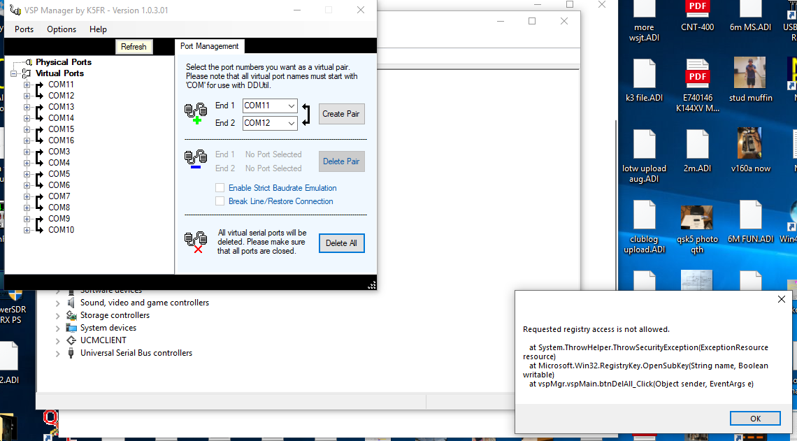

A while ago there were two paths:
Not an easy choice. I chose the latter choice with a good virus protection and a router between me and the outside world. I still don't know if I made the right choice.
Bob Van
Tuyl
K6RWY
I still can’t delete my virtual port pairs that don’t work any longer. I was able to delete the single ones through deleting urouter program. I have emailed K5FR who wrote the program that creates the virtual port pairs on what I should do.

So my situation is still not resolved. Also my second CAT on microham urouter doesn’t function. I guess I should email the microham people as well and ask what are my options. The recent windows update has really put a wrinkle in my operations.
The good news is that I can operate my K3 with Win4K3 and NAP3 at same time which is important to me but if I want to use wsjt-x I need to close Win4k3.
Btw, I figured this out yesterday during the 6m TEP opening to South America. I was scrambling to get stuff working for FT8 and was able to work two Ecuador stations on 6m. Signals were as loud as +12 dB here in EL09 but no one dropped down the band to work SSB or CW. Too bad since signals were definitely strong enough for both modes.
73,
KeithNz5f
Sent from my iPhone
On Apr 7, 2020, at 6:56 AM, Frank Sole via Chat <chat@ncdxc.org> wrote:
It's been mentioned in previous posts to record/document settings to mitigate this problem. Does anyone have a quick easy way to do that without doing it by hand in every setup box?
Thanks,
73FrankWB8YHD
Sent from my BlackBerry - the most secure mobile device
_______________________________________________Paul
Thanks for the heads up!!!! This happened to me a few years ago here in Saratoga with Windows 10….…ARRRGGHHHH!
If one goes into “SETTINGS” in Windows 10 and accesses “updates” one can also “turn off/delay” Windows 10 automatic updates for up to 35 days. Hopefully there may be a “fix” from Microsoft in the next 35 days………
Thanks again! The last time this happened it was a nightmare for me…..….
73, Ted, K6XN
PS For our Nevada County remote “cabin” location computers in the Sierra I plan to simply “disconnect from the Internet” as you recommend for our Windows 10 operating system computers and hope that there will be a “fix” for this nightmare by the time we head back up to the Sierra….
From: Chat [mailto:chat-bounces@ncdxc.org]On Behalf Of Paul N6PSE via Chat
Sent: Monday, April 06, 2020 5:28 PM
To: NCDXC Discussion List
Subject: [NCDXC Chat] Windows Update hosing sound settings
NCDXC friends,
I work in IT for a large company. I am also active on several Ham Radio related forums.
I am learning that the next Microsoft Windows Update is a real booger that severely hoses virtual com ports and sound card settings.
You may want to document your virtual com ports and sound settings now and this update seems to obliterate everything.
You can disconnect from the Internet or turn off automatic updates to delay this update but it is really best to document your settings now.
Paul N6PSE
Chat mailing list
Chat@ncdxc.org
http://mail.ncdxc.org/mailman/listinfo/chat_ncdxc.org
_______________________________________________ Chat mailing list Chat@ncdxc.org http://mail.ncdxc.org/mailman/listinfo/chat_ncdxc.org